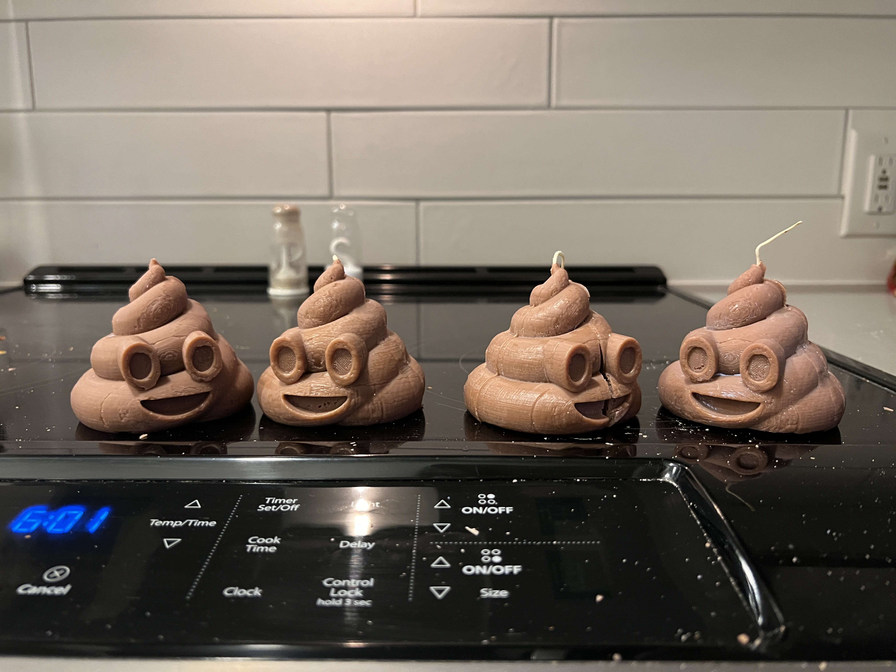

Light + Music OR Poop and Scent?
Plan A: Concept
First thing you need to know about me is that I LOVE Coldplay. In the last year, I’ve had the opportunity to see them live 3 times – in Seattle, San Francisco, and London! I love how energetic and colorful their concerts are. I wanted to combine this expression of color and music into a speaker that has a light synced with the music.

A few weeks ago when Prof Nadya pulled up IKEA and Teenage Engineering collab, I thought it’d be really cool to do build something just like this. I love the modularity and the simplicity of the design. If there’s anything I’ve learnt from my recent 3D printing experiences it’s that I need to print modular designs with flatter parts.


Here are my initial sketches

Plan A: Breakdown + Timeline
First thing you need to know about me is that I LOVE Coldplay. In the last year, I’ve had the opportunity to see them live 3 times – in Seattle, San Francisco, and London! I love how energetic and colorful their concerts are. I wanted to combine this expression of color and music into a speaker that has a light synced with the music.- Week 1: CAD Modeling + Grasshopper
- Week 2: 3D Printing
- Contingency after 2 days of trying: Laser Print boxes if 3D printing fails
- 2 days to acquire wood and laser cut
- Also consider pivoting to Plan B at this point.
- Week 2: Final 2 days will be for assembling pieces and finishing
Plan A: Bill of Materials
- I already own the speaker and the lights so I’m not trying to spend any money.
- I have about 500gms of filament remaining and might need to order more. This should cost ~$20.
- The cost of a 1/4” thick plywood for laser cutting is $20.
- A sand paper kit for finishing is $10.
- Total w/o contingency: $0-20.
- Total w/ contingency: $30.
Plan B: Concept
My poop candles turned out to be quite popular! And because I booked my 3D printer mold and just tore my silicone cast, I will need to make it again to fulfill the demand. And it would be cool to do it all again (if my printer doesn‚Äôt decide to be a üí© to me again). Maybe I‚Äôll do another shape, if it‚Äôs not okay to redo this assignment.
Look at them talking üí© to each other! 
Plan B: Breakdown + Timeline
- Week 1: Trying to make Plan A work
- Week 1.5: CAD Modeling
- Week 1.5: 3D Printing
- Contingency after 2 days of trying: 3D print at the Mill
- Week 2: Final 2 days will be for assembling pieces and finishing
Plan A: Bill of Materials
- OOMOO, $25
- Wax, $20
- Already have the scent and coloring (thanks to Noelle!).
- Total, $45
Stay tuned to see which route I ended up taking! Thanks for checking this illformatted page out!